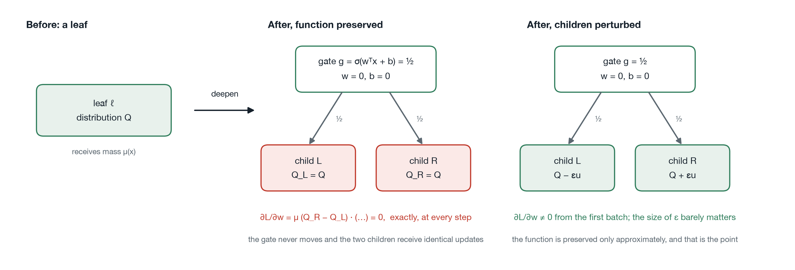
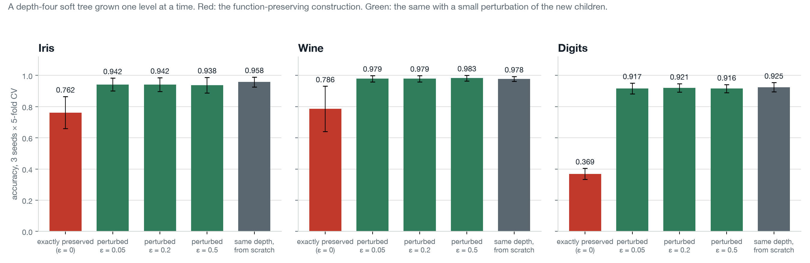

Bir Sınıflandırıcıyı Büyütmenin Dört Yolu ve En Güvenli Görüneninin Neden Hiç Öğrenemediği
arXiv bir makalemi yayımladı: Four Ways to Grow a Classifier and Why One of Them Cannot Learn, arXiv:2610.00180. Bu yazı, on iki sayfa LaTeX yerine yirmi dakika düzyazı okumayı tercih edenler için makalenin sırayla ve sayılarıyla anlatımı. Bir de makalenin nasıl ortaya çıktığının hikâyesi, çünkü o kısım makalenin biçimini açıklıyor.
Bir çalışma olarak tasarlanmadı. Gradyan inişiyle eğitilen ağaç modelleri için scikit-learn uyumlu bir kütüphane olan neural-trees'i yazarken, eğitilirken büyüyen modellerle ilgili dört uygulama sorusunu karara bağlamam gerekti. Her biri için makul görünen seçeneği yazdım, uyguladım ve iyileştirmesi beklenen şeye karşı, tek bir sabit protokolle ölçtüm. Dördünün üçü bir niceliği başka bir nicelikle takas etti. Dördüncüsü hiç öğrenemedi, ve onun sebebi bir tablodan okunmak yerine ispatlanabiliyordu. Makale bu.
Önce bir sınır. Aşağıdaki her sayı depodaki tek bir betikten geliyor, paper/arxiv/olcum/olc.py; makale metni adlandırılmış yer tutucuları olan bir şablon ve ikinci bir betik o betiğin çıktısını şablona yerleştiriyor. Hiçbir sayı elle yazılmadı; bu yazıdakiler de dahil, onları hafızamdan değil makaleden kopyaladım. Protokol baştan sona aynı: özellikler yalnızca eğitim katının istatistikleriyle standartlaştırılıyor, üç tohumla tekrarlanan tabakalı beş katlı çapraz doğrulama, kol başına on beş eğitim, her kol için aynı katlar. Standart sapmalar o on beş eğitimin yayılımı, güven aralığı değil; evet ya da hayır gereken yerde birleşik 5x2cv F testini kullandım.
Adım 1. Burada "Büyümek" Ne Demek
Bir yumuşak karar ağacı, her iç düğümü bir kapı olan tam bir ikili ağaç: özelliklerin ağırlıklı toplamının sigmoidi, her örneğin bir payını sola kalanını sağa gönderiyor. Her yaprak bir sınıf dağılımı tutuyor ve tahmin, örneğin her yaprağa ne kadarının ulaştığıyla ağırlıklanmış yaprak karışımı. Bunların hepsi türevlenebilir olduğu için ağacın tamamı gradyan inişiyle eğitiliyor; eğitilince de ağacı eğitim sırasında büyütmek ayrı bir algoritma olmaktan çıkıp bir tasarım tercihi oluyor.
Makale böyle dört tercihe bakıyor. Üçü kapasite ekliyor: ağaca koca bir seviye, bir ağa bir gizli birim, tek bir yaprağa bir bölünme. Dördüncüsü her düğümde o düğümün hangi tür bölünme alacağını seçiyor. Sırayla:
- Eğitilmiş bir ağacı hesapladığı fonksiyonu değiştirmeden bir seviye derinleştirmek.
- Yeni bir gizli birimi rastgele kurmak yerine önce ağın artık hatasına oturtup sonra kurmak.
- Koca bir seviye yerine her seferinde tek yaprağı, en çok beklenen hatayı taşıyanı bölmek.
- Bir düğüme daha ifade gücü yüksek bir bölünmeyi yalnızca iyileşme istatistiksel olarak anlamlıysa vermek.
Adım 2. Herkesin İlk Yazdığı İşlem
Eğitilmiş bir yumuşak ağacı öğrendiği hiçbir şeyi kaybetmeden derinleştirmenin apaçık bir yolu var. Her yaprağı al, ağırlıkları tamamen sıfır bir kapıya çevir, böylece kütlenin tam yarısını her yöne göndersin, ve iki yeni çocuğa da ebeveynin dağılımını ver. Q'nun yarısı artı Q'nun yarısı Q eder; daha derin ağaç, sığ olanın hesapladığı fonksiyonun tıpatıp aynısını hesaplar. Eğitim oradan devam eder ve ek kapasite hazır bekler. Net2Net ve ağ morfizminin fonksiyon koruyan dönüşümlerinin ağaç sürümü bu, ve benim ilk yazdığım kurulum da buydu.

Yeni seviye hiçbir şey öğrenmedi. Yavaş değil; hiç. Sebebi birkaç satır türev. Alt ağacın çıktıya katkısı, eski yaprağa ulaşan kütle çarpı iki çocuğun karışımı: g çarpı sağ çocuk artı (1 eksi g) çarpı sol çocuk. Kapı değeri g'ye göre türev alın, ulaşan kütle çarpı iki çocuğun farkını bulursunuz. Çocuklar özdeşken o fark sıfır vektörü. Kapının ağırlıkları ve sapması kayba yalnızca g üzerinden ulaşıyor; zincir kuralıyla gradyanları tam olarak sıfır, g ne olursa olsun, kayıp ne olursa olsun. Önermenin ilk yarısı bu. İkinci yarısı: kapı yarımda dururken iki çocuk özdeş gradyan alıyor, yani özdeş kalıyor. İki yarıyı birleştirip eğitim adımları üzerinde tümevarım yapın. Her adımda kapı güncelleme almıyor, çocuklar aynı güncellemeyi alıyor; gradyanı sıfır yapan koşul her adımda tam olarak yeniden kuruluyor ve argüman sonsuza kadar tekrar ediyor.
Neyin kurtarmadığı konusunda kesin olmak istiyorum. Momentum, Adam, ağırlık sönümü: her biri sıfır olan bir gradyanı ölçekliyor ya da biriktiriyor; ağırlık sönümü iki eşit çocuğu eşit miktarda küçültüyor. Mini yığınlar yardım etmiyor, çünkü iki çocuk da aynı yığını görüyor. Kayan nokta gürültüsünün bağı çözmediğini de varsaymadım, kontrol ettim: Iris'te eğitilip sonra derinleştirilen derinlik-iki bir ağaçta, her yeni kapının mutlak gradyanlarının toplamı tek duyarlıkta 0, küçük değil, ve kardeş yaprakların gradyanları bit bit aynı. Bu kontrol kütüphanenin sürekli entegrasyonunda çalışıyor.
Sinir ağı literatürüyle karşıtlık makalenin asıl noktası. Net2Net bir birimi kopyalıyor, kopyaların simetrik olduğunu not ediyor ve gürültü ekliyor. Splitting steepest descent, kopyalanmış bir nöronun bir eyer noktasında oturduğunu gösterip oradan çıkan ikinci dereceden yönü türetiyor. GradMax yeni ağırlıkları sıfırlıyor ama birime bir sapma veriyor ki giden ağırlıkların izleyecek bir şeyi olsun. Üçünde de birinci dereceden bilgi zayıf ama geri kazanılabilir. Ağaç kapısında yok: türev sıfır ve kendini yeniden üretiyor.
Adım 3. Bedeli Ne, Bedel Nereden Geliyor
Düzeltme, iki çocuğu kurulum anında zıt yönlere küçük rastgele bir miktar oynatmak. Fonksiyon o zaman yalnızca yaklaşık korunuyor, ki asıl mesele de bu çıkıyor.

Tam koruma, aynı derinlikte sıfırdan eğitilen ağaca karşı Iris'te 19.6, Wine'da 19.1, Digits'te 55.6 doğruluk puanına mal oluyor. 0.05 ile 0.5 oynatma arasında, on katlık bir aralıkta, ortalamalar en fazla 0.4 puan hareket ediyor. Sıfırı 0.2 ile karşılaştıran F testi Iris'te p = 0.048, Wine'da 0.010, Digits'te 0.0001'in altını veriyor; Iris değeri alışılmış çizginin tam üstünde ve makalede ona yaslanmıyorum, çünkü test tutucu ve ölçekleyiciyi testin katlarının içine taşıdığımda değer 0.05'i geçti.
Bu üç veri kümesi hatanın gerçek olduğunu söylüyor. Ne zaman pahalı olduğunu söylemiyor; onu önerme söylüyor. Bu yolla derinleştirilen bir ağaç, başladığı ağacın fonksiyonunu hesaplıyor, onun da iki yaprağı var. İki yaprak iki dağılım tutabilir. İki sınıflı bir problemde ağacın ihtiyacı olan tam olarak bu, yani ölü seviyeler hiçbir şeye mal olmamalı; K sınıflı bir problemde ağaç ihtiyacı olan K yaprağa asla ulaşamıyor, bedel sınıf sayısıyla büyümeli, özellik sayısıyla değil. Bugün arXiv'deki sürüm üç veri kümesini raporluyor. Bu hafta gönderdiğim yenisi tahmini OpenML'den yirmi veri kümesinde daha sınıyor ve tahmin tutuyor: 13 iki sınıflı kümede ortalama bedel eksi 0.2 puan, yani yok; 7 çok sınıflı kümede 40.2 puan, 20 ile 58 arasında, ve F testi hepsinde eşitliği reddediyor. Bedelin sınıf sayısıyla Spearman korelasyonu 0.64, özellik sayısıyla 0.03. İlk taslak hatanın "yaklaşık yirmi puana" mal olduğunu yazıyordu. Doğru ifade şu: başlangıç ağacının kapasitesiyle problemin ihtiyacı arasındaki boşluk neyse ona mal oluyor, o da ya sıfır ya felaket, arası nadiren var.
Adım 4. Simetrinin Nasıl Kırıldığı Önemli mi
Rastgele gürültü bağı keyfi bir yönde çözüyor; daha iyi bir yön varmış gibi görünüyor: kaybın yaprağın dağılımına göre artığı, yaprağın hangi sınıfları eksik tahmin ettiğini söylüyor, dolayısıyla iki çocuk o yön boyunca ebeveynin iki yanına yerleştirilebilir ve yeni kapı bir yöne çeken örneklere doğrultulabilir. GradMax'in fikrinin ağaç kapısına uygulanmışı bu. Uyguladım, yardım etmesini bekledim, ve 24 veri kümesinde düz gürültüye karşı doğruluğu ortalama +0.20 puan değiştiriyor, medyan sıfır, 24 F testinden ikisi 0.05'in altında, ki bu şansın ürettiği kadar. Ölçülebilen tek etki kararlılık: çok sınıflı kümelerde katlar arası standart sapma 0.025'ten 0.021'e düşüyor. Gradyan sıfır olmaktan çıktıktan sonra gradyan inişi bölünmeyi kendi buluyor. Önermenin bir başlangıçtan istediği tek şey gradyanın sıfır olmaması.
Adım 5. Yeni Gizli Birim Nereye Konur
İkinci karar başka bir modeli ilgilendiriyor: Alpaydın'ın büyü-ve-öğren (GAL) ağı, eğitim hatası iyileşmeyi bırakınca bir gizli birim ekliyor. Orijinali birimi rastgele ağırlıklarla kuruyor ve rastgele bir birim geldiği anda her çıktıyı bozuyor; az önce tıkandığına hükmedilmiş bir ağa zarar veriyor. Alternatif cascade-correlation'ı izliyor: ağı dondur, artığını hesapla, adayın gelen ağırlıklarını o artıkla korelasyon kuracak şekilde eğit, birimi sıfır giden ağırlıkla kur. Fonksiyon kurulum anında değişmiyor ve bu kez bu güvenli, çünkü gelen ağırlıklar herhangi bir sinyal taşır taşımaz giden ağırlıkların gradyanı sıfır olmuyor.
Satın aldığı şey daha küçük bir ağ, her veri kümesinde: Iris 17.2 gizli birimden 6.9'a, Wine 6.3'ten 4.3'e, Digits 7.5'ten 5.7'ye iniyor. Mekanizma büyüme izinde görünüyor. Rastgele bir birim işe yaramadan geliyor, hata düşmüyor, büyüme ölçütü yeniden ateşleniyor ve ağ, büyüme işe yaramadığı için büyüyor. Birimi önce oturtmak o döngüyü kaldırıyor. Satın almadığı şey doğruluk. Iris yükseldi, Wine aynı kaldı, ikisi de anlamlı değil; Digits'te doğruluk 2.1 puan düştü ve F testi bunu anlamlı sayıyor, rastgele başlatma lehine. Muhtemel sebep aynı tabloda: artık sürümü 5.7 birimde duruyor, rastgele olan 7.5'e kadar gidiyor, ve on sınıflı bir problemde o birimler iş yapıyor. Erken duran büyüme kolay problemde tutumluluk, zor problemde eksik öğrenme, ve ölçüt ikisini ayıramıyor. Daha önceki bir taslak Iris'teki kazancı tek başına raporluyordu. O tür bir iddia tam olarak biri dördüncü veri kümesini çalıştırana kadar yaşar.
Bir ayrıntı bana bir günüme mal oldu ve başkasına mal olmasın diye makalede. Aday amaç fonksiyonu, dejenere bir yığında sıfır olabilen bir varyansın kareköküne bölüyor. Sıfırda karekökün türevi sonsuz ve bütün ağ tek adımda NaN oluyor. Varyansı kökten önce sınırlamak düzeltiyor; sonucu sonradan sınırlamak düzeltmiyor, çünkü o zamana kadar gradyan çoktan oluşmuş oluyor.
Adım 6. Hangi Yaprak Bölünür
Koca bir seviye yerine ağaç her seferinde tek yaprak büyüyebilir, en çok beklenen hatayı taşıyan yaprağı bölerek. Bu kural açık ara en seyrek ağaçları üretiyor, ve yirmi OpenML kümesinde tam bir derinlik-altı ağaca karşı 11'inde kaybetti, 3'ünde berabere kaldı, 6'sında kazandı, ortalama 1.8 puanla, ve her çok sınıflı kümede kaybetti. Seyreklik gerçekti, 63 bölünmeden bir ile on sekiz arasına, ve bedeli doğrulukla ödeniyormuş gibi görünüyordu.
Bedel bir kusurla ödeniyordu, ve aynı kusurdu. Bir yaprak bölününce kod düğümü bölünmüş olarak işaretliyor ve başka hiçbir şey yapmıyordu: çocuklar kuruldukları eğitimsiz logitleri tutuyordu, yani bölünme ebeveynin öğrenilmiş dağılımını tekdüze bir dağılımla değiştiriyor ve çocukları özdeş başlatıyordu. Koca bir seviye yerine tek bir düğümde önerme. Seviye seviye büyüme yolu bundan kurtarılmıştı; yaprak yaprak yol kurtarılmamıştı. Çocuklar ebeveyni devralıp simetri kırılınca yaprak yaprak büyüme, sekiz çok sınıflı kümede ortalama, tam ağacın 8.3 puan altından 2.3 puan altına çıktı, bölünmelerin %23'ünü kullanarak. Simetri kırmanın yönü yine ikinci dereceden bir meseleydi; sonucu değiştiren ebeveyni devralmaktı.
Büyütülen bir ağacı sıfırdan eğitilenden ayıran iki şey daha var ve ikisi de büyüme değil. Büyütülen ağaç son adımın yerini hak edip etmediğine karar vermek için eğitim katının %10'unu ayırıyor, ve epoch bütçesini büyüme turlarına bölüyor. Ayrı ayrı ölçünce, ayırma tek başına sabit bir ağaca 0.4 puana mal oluyor ve her büyüme turuna tam bütçeyi vermek bölmeye göre 0.8 puan değer. Büyümenin bedeli gibi görünen şeyin bir kısmı %10 daha az veriye sahip olmanın bedeliydi, bu başka bir şey ve öyle söylenmeli.
Adım 7. Bir Düğümde Bölünme Türünü Seçmek
Omnivariate ağaç her düğümün bölünme türünü, tek özellikli eşik, doğrusal ya da doğrusal olmayan bölünme, o düğümün verisinde çapraz doğrulanmış doğrulukla seçiyor. Bu, en ufak bir iyileşme için bile doğrusal olmayanı basit olana tercih ediyor. İyileşmenin aynı F testiyle anlamlı olmasını istemek, değilse basit bölünmeyi tutmak, kesinlikle daha iyi gibi geliyor. Değil. Breast Cancer'da ağaç büyüyor, 4.7 düğümden 7.0'a, ve doğruluk düşüyor, 0.971'den 0.958'e; Digits'te aynı doğruluk için büyüyor. Daha basit bir bölünme düğümünün verisini daha kötü ayırıyor, çocuklar daha zor problemler devralıyor ve sırayla onların da bölünmesi gerekiyor. Yerel olarak dayatılan tutumluluğun bedeli küresel ödeniyor. Yapısal bir sorun da var: testin anlamlı olması için düğümde asgari bir örnek sayısı gerekiyor ve düğümler derinlikle küçülüyor; ölçüt tam da özyinelemeli bir yöntemin işinin çoğunu yaptığı yerde en az kullanılabilir oluyor. Seçenek kapalı geliyor.
Dördünün Ortak Noktası
Tek bir eksende diziliyorlar: yeni yapı geldiği anda optimize edicinin üzerinde çalışacağı bir şey var mı. Artığa oturtulup sıfır giden ağırlıkla kurulan bir birimin gradyanı hemen sıfırdan farklı, ve güvenilir biçimde daha küçük bir ağ veriyor. Ebeveyni devralan ve birbirinden farklı iki çocuğa bölünen bir yaprağın gradyanı hemen sıfırdan farklı, ve artık bölünmelerin bir kesriyle tam ağacın birkaç puan yakınına geliyor. Özdeş çocuklu bir kapı seviyesi ya da özdeş eğitimsiz çocuklara bölünmüş bir yaprak optimize ediciye hiçbir şey bırakmıyor, ve bedel tam olarak ağacın artık ulaşamadığı kapasite.
Eksen hangi işlemlerin çalışabileceğini söylüyor. Ne kadar yardım edeceklerini söylemiyor; 5. ve 6. adımlar bunun probleme bağlı olduğunu gösteriyor. Simetrinin nasıl kırıldığını da umursamıyor. Buradan çıkan pratik kural dar ve ucuz: türevlenebilir bir modele eğitim sırasında parametre eklediğinizde, eklemeden sonraki ilk yığında o parametrelerin gradyanını hesaplayın ve sıfır olmadığını assert edin. Bir testte tek satır. Bu kütüphanede iki kusuru da yakalardı.
Makalenin İddia Etmediği Şeyler
Veri kümeleri orta boy, alt örneklemeden sonra en fazla 5.000 satır ve 72 özellik; doğruluk hakkındaki sonuçlar bunun ötesine genellenecek şekilde okunmamalı. Her kıyaslama tek bir uygulamanın kolları arasında, ayarlar sabit; bu, sınanan işlemi yalıtıyor ama kazanan kolun mevcut en iyi yöntem olduğunu göstermiyor, ve 6. adım benim bir uygulama ayrıntımın bir etkinin tamamından sorumlu olabileceğinin hatırlatıcısı. Önerme kesin ve uygulamadan bağımsız. Makaledeki başka hiçbir şey öyle değil. Splitting steepest descent tarzında ikinci dereceden bir bölme yönü işlemi gürültüsüz onarmanın doğal yolu, ve denemedim.
Her Şey Nerede
- Makale: arxiv.org/abs/2610.00180 (PDF)
- Kod, ölçüm betiği ve sıfır gradyan regresyon testi: github.com/cgrtml/neural-trees
- Ölçülen sürümün arşivi: doi.org/10.5281/zenodo.22929121 (v0.7.0)
- Kurulum:
pip install neural-trees, pypi.org/project/neural-trees - Belgeler, tasarım kararları ve tablolarıyla: cagritemel.com/neural-trees
- Modelleri tarayıcıda deneyin: neural-trees.streamlit.app
- Kütüphanenin ne işe yaradığı, kredi skorlama vakasıyla: önceki yazı
Büyüyen modeller eğitiyorsanız tek satırlık kontrolü çalıştırın. Sizin kodunuzda düşerse duymak isterim; geçerse onu da.